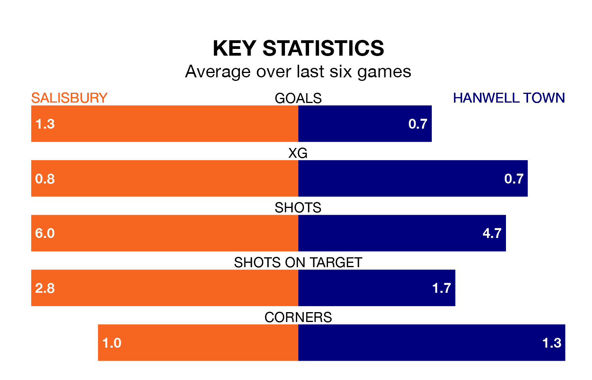

Salisbury are heavy favourites to keep all three points at home in Saturday's kick-off against Hanwell Town.
Salisbury, who sit second in the Southern League Premier South with 40 games played, are priced at 1.6 to seal victory at the Raymond McEnhill Stadium.
Sitting 15 places and 28 points behind them in the table, Hanwell are 4.2 to win with *Betting Company*, while the draw is at 4.3.
With 58 goals in 39 games so far this season, Hanwell are scoring at below the league average rate with 1.5 goals per game. And they are conceding more than average, letting in 65 goals at a rate of 1.7 per game.
Salisbury, meanwhile, are above average scorers, with 1.7 goals per game, compared to a league average of 1.6. They have conceded 1.1 goals per game.
The home side are in mixed form in the Southern League Premier South, with two wins and a draw from their last six games.
And also with two wins and a draw over that period, Town's form is identical – they have both taken seven points from 18.
In the last three years, Salisbury and Hanwell have played each other on three occasions. Salisbury won all of them.
Their last meeting was on November 18, when Salisbury won 3-2 away.
Salisbury's last match was on April 20, a 2-0 win against Hayes and Yeading United.
Hanwell beat Hungerford Town 1-0 last time out, also on April 20.
Updated: 07:59 (UTC), 26/04/24